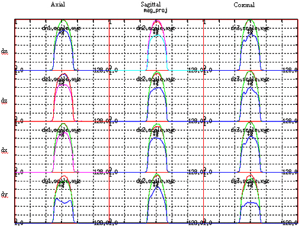
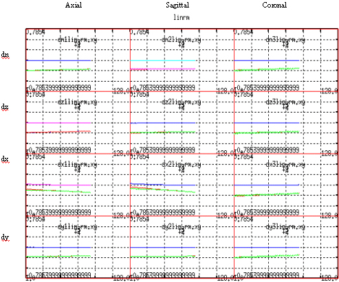

Proprietary to General Electric Company
Direction 5670006, Rev# 1
Discovery MR750w GEM Service Methods
Module Version 1.0, Version Date 5/15/07
Proprietary to General Electric Company |
Illustration 1: Magnitude Projection Plots

The magnitude projection plots displays the magnitude profiles of post row FT data. The 1st row is for the T2 (non-diffusion) scan. The 2nd row is for diffusion on logical Z(slice). The 3rd row is for diffusion on logical X (read). The 4th row is for diffusion on logical Y (phase). The 1st column is for Axial acquisition, the 2nd column for Sagittal acquisition, and the 3rd column for coronal acquisition.
Each cell contains 3 plots. The highest amplitude plot is from the last Ky line in K space (1st Ky line in time for epi). The 2nd highest amplitude plot is from the center of K space and the lowest amplitude plot is from the 1st line in K space (last Ky line in time for epi).
The first row is normalized to the T2 acquisition plane that has the largest amplitude. Typically these amplitudes are very close to one another since no diffusion lobes (and hence no diffusion lobe residual eddy currents) are present.
Rows 2-4 are normalized to the cell with the largest amplitude out of these 9 cell values. Typically these amplitude plots will be close in value if there is no large residual cross term or on-axis eddy current that dephases the signal in the logical phase encode direction. If you see one of the plots in rows 2-4 that has a large difference (plot is very squashed and distorted) compared to the other 8 plots, then this usually indicates a large cross term or on axis eddy current that can corrupt the results of this test (as well as introduce very large DW EPI distortions).
Illustration 2: Constant Phase Correction Plots

The constant phase correction plots display the view specific constant phase error, the line fitted correction, and the delta error between the view specific data and the line fitted data. The vertical axis units for each cell are +/- pi radians. The 1st row is for the T2 (non-diffusion) scan. The 2nd row is for diffusion on logical Z(slice). The 3rd row is for diffusion on logical X (read). The 4th row is for diffusion on logical Y (phase). The 1st column is for Axial acquisition, the 2nd column for Sagittal acquisition, and the 3rd column for coronal acquisition.
Illustration 3: Linear Phase Correction Plots

The linear phase correction plots display the view specific linear phase error, the line fitted correction, and the delta error between the view specific data and the line fitted data. The vertical axis units for each cell is +/- pi/4 radians / freq point. The 1st row is for the T2 (non-diffusion) scan. The 2nd row is for diffusion on logical Z(slice). The 3rd row is for diffusion on logical X (read). The 4th row is for diffusion on logical Y (phase). The 1st column is for Axial acquisition, the 2nd column for Sagittal acquisition, and the 3rd column for coronal acquisition.
Illustration 4: Phase Projection Plots

The phase projection plots displays the normalized magnitude from the center of K space and the corresponding phase data. The vertical axis units for each cell is +/- 180 degrees. The 1st row is for the T2 (non-diffusion) scan. The 2nd row is for diffusion on logical Z(slice). The 3rd row is for diffusion on logical X (read). The 4th row is for diffusion on logical Y (phase). The 1st column is for Axial acquisition, the 2nd column for sagital acquisition, and the 3rd column for coronal acquisition.
The phase plots should be relatively linear in regions of large magnitude (they can wrap around as seen in the above plots).
Illustration 5: ASCII Output File

The ASCII output file containing the distortion results is in /usr/g/service/cclass/dwepi_check_results. (Note that this file may have an extension on it if you specified one in the “suffix” box on the DWEPIQ Tool window). The data is arranged in the same 4x3 matrix format where the rows are logical diffusion axes and the columns are scan planes. Currently these are only preliminary guidelines for the Axial data column, since the current clinical usage of DW EPI is primarily for head axial scans. For TwinSpeed, check the correct file by its GradMode extension, e.g. dwepi_check_results.WHOLE
Shift: This is a measure in units of mm of how each pixel in the image is shifted in the phase encode direction due to residual B0 eddy currents.
Shear: This is a measure of the image shear angle in units of degrees which is due to cross or on axis residual linear eddy current effects on the logical readout gradient. The shear angle determines how each pixel in each Freq encoded bin will shift in the phase encode direction dependent upon its distance from the center of the image. The pixel misregistration in the phase encode direction will be worse at the edges of the FOV in the frequency encode direction and go to zero at the center of the image. Typically on very well tuned systems we see this number being less than 1 degree.
CompDial (Compression Dilation): This number is unitless and represents the ratio of the FOV change due to residual cross or on axis residual linear eddy current effects on the logical phase encoding gradient. A number greater than 1 indicates a FOV dilation (phantom compression), a number less than 1 indicates a FOV compression (phantom dilation). The closer the number is to 1 the better. The misregistrations due to compression or dilation are worse at the edge of the phase encode FOV and go to zero at the center of the image.
Max Dist (Max Distortion): This is a number in units of mm and represents the vector sum of shift, shear, and comp/dial distortions anywhere in the FOV. Due to the effects of shear and comp/dial the worse case pixel misregistration will ALWAYS occur in one corner of the FOV. There are no preliminary guidelines as to what this error can be but it is always >= the Dist Ell value.
Dist Ell (Distortion Ellipse): This is a number in units of mm and represents the vector sum of shift, shear, and comp/dial distortions within a hard coded elliptical area that represents the 95th percentile area of a human head centered in the image. The preliminary guideline for this number is +/- 4.5 mm. Typically Echospeed systems that are properly calibrated and using the ramp sampled, 30cm FOV, 0.75 phase FOV protocol can easily meet these requirements. Dist Ell values for Echospeed are typically in the 1-3 mm range. Highspeed systems cannot do epi ramp sampling and do not have a fast receiver, therefore the echo spacings on Highspeed are much larger and distortion effects are much worse. Typical Dist Ell values that have been seen on Highspeed systems are in the range of 5-7 mm.
Inter Diffusion Distortions: The 3 numbers reported at the bottom of each column are the “intra-diffusion” distortion numbers. (Example for the axial data are |Img7-Img10|, |Img13-Img7|, and |Img10-Img13|). This number is in units of mm and represents the maximum misregistration between the same pixel location between two of the intermediate diffusion images before they are combined into the combined diffusion image. This is a representation of how well each of the 3 diffusion images “lay on top of each other”. The preliminary guidelines are again +/-4.5 mm. Again Echospeed system using the ramp sampled protocol should be able to easily meet this requirement while Highspeed systems will have more difficulty due to the longer echo spacings for epi.
The following illustrates the logical to physical gradient axis mapping as well as the diffusion lobe axes. Use this diagram to interpret the hardcopies of the graph mode and image plots.
Illustration 6: Logical to Physical Gradient Axis Mapping